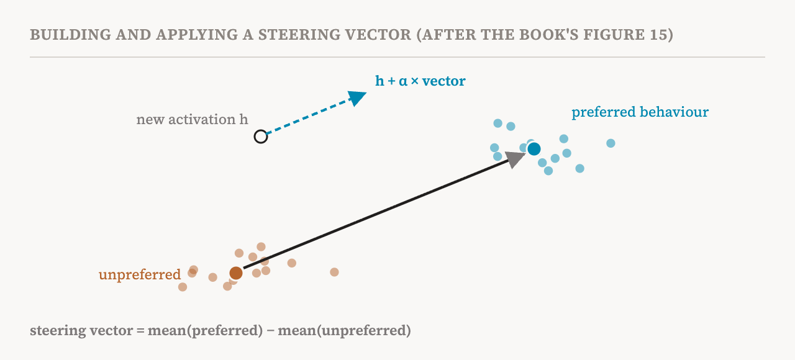
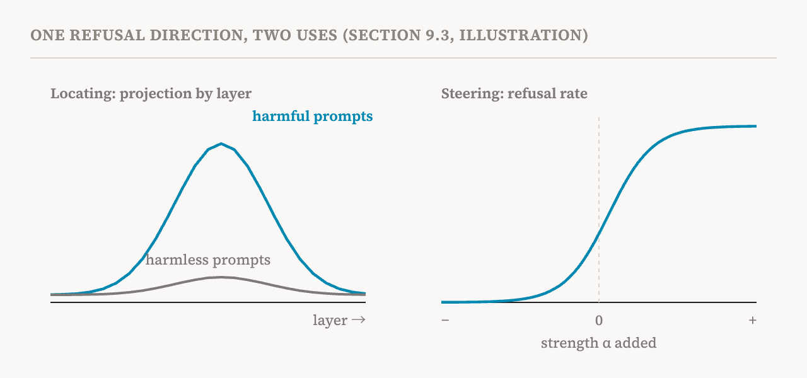

Part 24 asked what differs between two models. This part covers the other two questions of the book's ninth chapter, sections 9.2 and 9.3 (pages 80–82). Where in a model is a particular piece of information or behaviour most causally relevant? And can understanding of representations be used to change a model's behaviour? The two sound close, and the book's main lesson is the difference between them.
Knowledge localisation
Knowledge localisation methods look for the layers, components or subspaces whose activations are causally tied to a particular capability or behaviour. Part 3 met the best-known method, causal tracing, from 2022. It corrupts the input, for example by adding noise to the words naming the subject of a fact, and then restores the clean activation at one place at a time, to see which restorations bring the right answer back. The places that matter most are where the fact is retrieved. Related work found that the MLP layers hold a disproportionate share of factual associations, acting somewhat like stores of keys and values, and that these can sit in a small subspace of the weights of late-layer MLPs. These analyses laid the ground for localisation.
The companion notebook runs this on GPT-2 Medium with the classic example of the Eiffel Tower and Paris, and compares how much the MLP and attention components at each layer matter.
Where it is is not how it works
The book is careful about what localisation shows. It finds where information is most strongly represented. It does not show whether the model uses that information. Transformers usually have far more capacity than they need, so information can be represented and processed redundantly, in many components and subspaces, depending on the input. A component with a strong causal effect may be only part of the mechanism. Localisation is a useful starting point for understanding, not an analysis that stands on its own; part 3 noted, too, that where causal tracing locates a fact predicts poorly where editing it works best.
Localisation can also find directions tied to behaviours. Refusal, for instance, has been found to have a roughly low-dimensional structure, with particular directions in activation space associated with a model's tendency to decline harmful requests. And researchers studied the sleeper agents of part 2 by comparing activations, layer by layer, for triggered and untriggered inputs. Such analyses answer where and how a model encodes behaviour-related information. But finding a direction or a layer does not explain the mechanism behind the behaviour; that needs finer-grained analysis such as the circuit discovery of parts 16 and 17.
Representation engineering and steering
Representation engineering changes behaviour by altering representations directly, rather than by changing weights. Activation steering usually means adding a vector to an intermediate activation, typically in the residual stream, to shift the model's outputs while it runs. Where localisation asks where something is, steering looks for a specific vector that changes behaviour. Because nothing is retrained, it is a lightweight way to control a model.
A steering vector is a direction in activation space which, scaled by some strength and added to an activation, moves the model towards a target behaviour. It can come from the weights of a trained probe. Another popular method, which part 7 met with GPT-2's happy direction, is the difference in means: the average activation when the model shows the preferred behaviour minus the average when it shows the unpreferred one. At inference time, the vector times a strength α is added to the activation at some layer.

Simple as this is, the book notes that it reliably changes behaviours such as refusal, helpfulness and style. That gives steering two roles: as a way to control behaviour, and as a causal test for probes. If intervening along a direction consistently changes a behaviour, that is evidence the representation causally influences it. The companion notebook steers GPT-2's sentiment, and then uses representation engineering on Llama-2-13B-chat to find a direction for bias and steer the model towards fairer answers.
The refusal vector
The book's worked example is the refusal vector. Collect prompts that make a model refuse, and matched prompts for which it should comply. The refusal direction at a layer is the average residual stream on the first set minus the average on the second. The projection of any activation onto that direction measures how much refusal it carries. Intervening along it tests how refusal depends on it, and previous experiments found that such interventions can strongly raise or lower refusal. The book adds that how the direction is built and read can vary across models and settings.

The example shows the difference between the two halves of this part. Measuring the projection across layers helps locate where refusal-related information is. Intervening along the direction tests what modifying it does to behaviour. The second gives evidence of causation; it still does not reveal the whole mechanism by which a model decides to refuse.
Beyond straight lines
Part 7 showed that not all concepts are straight directions, and steering has followed. One 2026 method projects activations into a kernel PCA space, a curved transformation of the original, steers linearly there, and maps back. Another steers along a low-dimensional manifold, motivated by findings that some concepts are better represented as manifolds than as directions. Separately, optimisation-based methods construct steering directions by directly optimising an objective, such as maximising task performance or suppressing unwanted outputs under intervention. They are more flexible than the closed-form contrast of two averages, but need much more computation.
Steering as a test for features
Steering can also check the labels other methods attach. If an SAE or CLT feature is thought to represent some concept, steering along its direction and watching the behaviour change provides supporting evidence. Such evaluations have been used to compare ways of finding directions, including SAE features, difference-in-means directions and DAS, and benchmarks such as RAVEL, MIB and AxBench, met in part 20, are built around them.
Brittleness and opacity
The book closes with a warning box on two limits. Steering can be brittle: a direction found for one distribution, model or task may not carry over to another. And successful steering does not, by itself, give mechanistic transparency. An intervention may affect several features at once, interact nonlinearly with the computation already under way, or work through an unintended pathway that produces the desired behaviour without matching a clean mechanism. A 2024 study showed how patching along a subspace can create exactly this kind of illusion. So steering should be read as evidence of causal influence, not as an explanation of the behaviour.
The chapter in brief
| Question | Method | What it can show | What it cannot show alone |
|---|---|---|---|
| What differs between two models? | Model diffing (part 24) | Candidate features added or changed by training | That a feature is really new, or causally used |
| Where is the information? | Knowledge localisation | The components or directions most causally tied to a behaviour | Whether the model relies on them, or the whole mechanism |
| Can we change behaviour through it? | Steering | That pushing a representation changes behaviour | How the behaviour is produced; whether it transfers |
With this, the group on reading the middle of a model ends. Its methods mostly show what can be decoded from a representation, and with steering, what changing it does, but not the full story of how the model uses it. The book's next chapter adds a dimension the series has so far ignored: time.
| Term | Meaning |
|---|---|
| Knowledge localisation | Finding the components whose activations are most causally tied to a piece of knowledge or behaviour |
| Causal tracing | Corrupting the input, then restoring activations one place at a time to see where the answer comes back |
| Overparameterised | Having far more parameters than a task needs, which allows redundancy |
| Representation engineering | Changing behaviour by editing representations rather than weights |
| Activation steering | Adding a vector to an intermediate activation during inference |
| Steering vector | A direction that, added at some strength, moves the model towards a behaviour |
| Difference in means | A direction built by subtracting the average activation for one behaviour from another's |
| Refusal vector | A steering direction tied to a model's tendency to refuse |
| Kernel PCA | A version of PCA that works in a curved transformation of the space |
| Optimisation-based steering | Finding a steering direction by directly optimising an objective |
| Brittleness | A direction that works in one setting failing in another |
Next, part 26 opens the group on training and data: what can be learned by watching a model change as it learns.